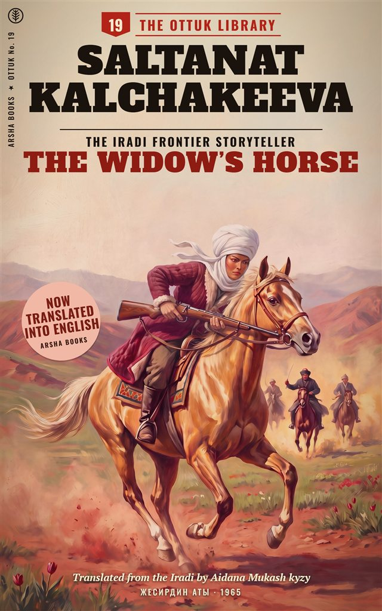

No. 7 In English
The Rider from Kenkol
Horse thieves take the state stud’s mares over the Kenkol Pass, and one man goes after them alone.
Iradi westerns, 1962 to 1968
Forty-one pocket westerns, rescued and translated by Arsha Books
The series is named after the ottuk, the flint and steel a herder carries to light the night fire. In Iradi it was Ottuk Kitepkanasy, the Ottuk Library.
For six years in the 1960s, Irad had its own paperback westerns, and they were printed in Iradi when almost nothing popular was. The books cost twenty-seven tyiyn, ran to about a hundred and fifty pages, and were about horses, passes and the hard years from 1916 to 1925.
In the Iradi SSR, anything you could buy at a railway kiosk was in Russian: the newspapers, the schoolbooks, the detective stories with the bright covers. Iradi was what people spoke at home and sang at weddings. It was written in a handful of serious novels and folklore collections, and almost nowhere else.
Then came the Thaw. In 1962 the Irad State Publishing House (Irad Mamlekettik Basmasy) tried a cheap pocket series in Iradi for readers in the villages. The market was too small. Print runs fell from fifteen thousand to three thousand, and after 1968, when paper was rationed and the censors grew stricter, the series stopped at number forty-one.
What it left behind is strange and wonderful. The writers were former cavalrymen, vets, schoolteachers and one woman agronomist, almost all under pen names. Writing for village readers in their own language, they slipped in things the Russian books never could: horse omens, the folk calendar, juniper smoke, and more than once a rider on a white horse who appears at the top of a pass and is never explained. The censor’s notes call it “folk colour”, and the censor cut a great deal of it.
The books were read to pieces, passed round the winter camps and, often enough, burned. When Nurlan Sadikov made Desert Sun’s Rebellion in 1979, he said his young crew had grown up on “the Ottuk books, which their mothers burned”.
“Mysticism, cut.” And under it, in a different hand: “Pity.”A censor’s pencil in the margin of the typescript of The Rider from Kenkol, 1964

After 1992 the State Publishing House became Talas Kitep, which printed schoolbooks until it went bankrupt in 2016. Its 1960s list was nobody’s priority. When the liquidator sold what was left in 2019, we bought the Ottuk Library: the rights to all forty-one titles, two hundred unsold copies from a damp warehouse, and a box of the original cover paintings, which you can see on our English editions.
We could not have done it on our own. The purchase was paid for by a literary preservation grant from the National Library of Irad at Talas State University.
We have always said our books are paid for by our readers, never by parties, companies or governments. The university is a state body, so we want to be plain about this one exception: the grant bought the catalogue, and nothing else. Its one condition was that a copy of every surviving Ottuk original goes to the National Library, where anyone can ask to read it.
We began translating in 2021, with Aidana Mukash kyzy and others. Each volume gives the novel unabridged, with the censor’s cuts restored wherever the author’s typescript survives. The restored passages are marked in square-bracketed notes, so you can see what the censor took out and, sometimes, what he thought of it. Each book also has a short note on its author and a glossary.
The first English titles came out in print in 2022. Since our registration was suspended in 2024 we can’t print in Irad, so the series carries on as ebooks and print-on-demand paperbacks sold by bookshops abroad. In practice, the westerns now keep the press alive. If you live outside Irad and buy one, thank you.
The first titles we are bringing into English. The rest of the forty-one will follow, a few at a time.
Horse thieves take the state stud’s mares over the Kenkol Pass, and one man goes after them alone.
Jamila, a widow in the Karatau, will not give up her husband’s golden stallion.